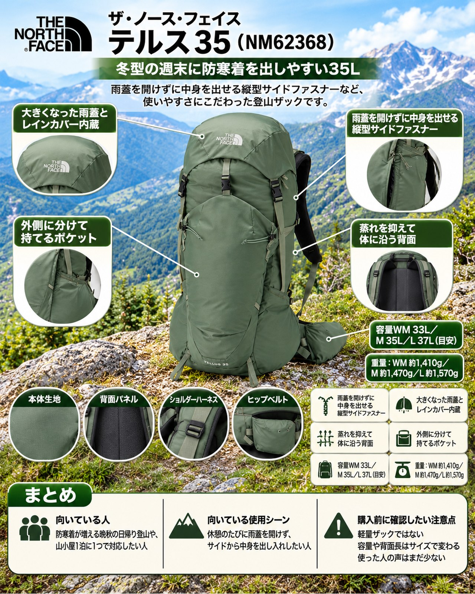

11月最初の週末は冬型の気圧配置になり、冷え込みが強まる見込みです。3000m級の稜線では氷点下の日が増え、涸沢上部は積雪・凍結、室堂周辺でも多くの山小屋が営業を終えました。一方、近郊の低山は紅葉が色づき始め、日中は15〜20℃前後と歩きやすい季節です。ただ、朝夕や山頂の風は冷たく、ダウンやフリース、手袋、レインウェアと荷物は確実に増えます。そんな週末の日帰り登山や山小屋1泊に紹介したいのが、ザ・ノース・フェイスの「テルス35」です。日帰りから小屋泊まで対応する、定番テルスシリーズの中型トレッキングパックです（公式ページ）。
基本スペック
※重量・素材・原産国・価格は2026年11月6日時点のメーカー公式オンラインストアの表示です。容量・寸法・背面長は公式オンラインストアに記載がなく、一部の紹介に載っている数値です（目安）。
| 項目 | 内容 |
|---|---|
| 商品名 | テルス35 |
| 品番 | NM62368 |
| サイズ | WM／M／L |
| 容量 | WM 33L／M 35L／L 37L（目安） |
| 寸法 | WM H61.5×W26×D19cm／M H64.5×W26×D19cm／L H68.5×W26×D19cm（目安） |
| 適応背面長 | WM 42-50cm／M 43-51cm／L 48-56cm（目安） |
| 重量 | WM 約1,410g／M 約1,470g／L 約1,570g |
| 素材 | 260Dリサイクルドビーナイロン、315Dリサイクルスモールドビーナイロン |
| 原産国 | ベトナム |
| 価格 | 25,850円（税込） |
雨蓋を開けずに中身を出せる縦型サイドファスナー
従来のトップローディングに加えて、雨蓋を操作せずに本体内部へアクセスできる縦型サイドファスナーを備えています。冷たい風の吹く山頂で、ザックの底のほうに入れたダウンを取り出したいとき、雨蓋のバックルを外して上から掘り返す必要がありません。使った人の声でも「横のジップから荷物を出せます」とあり、分かりやすい長所です。
大きくなった雨蓋とレインカバー内蔵
雨蓋の容量を大きくし、雨蓋後部にレインカバー内蔵の専用ポケットを設けています。レインカバーは付属品で、別に買い足す必要がありません。雨蓋の裏面にはキークリップ付きのファスナーメッシュポケットがあり、雨蓋の前後にはヘルメット固定用のリフレクトループも付いています。
蒸れを抑えて体に沿う背面
背面パネルは、フラットなメッシュの裏側に肉抜きしたEVAフォームを配置し、フィット感を保ちながら通気性を確保する作りです。成形ショルダー、PEシートと一体化した軽量なワイヤーフレーム、左右一体型のウエストハーネスで、荷重バランスの安定を図っています。登りで汗をかき、稜線で冷える晩秋は、背中の蒸れを減らせることが汗冷え対策にもつながります。
外側に分けて持てるポケット
フロントに大型のドロップポケット、両サイドに共地の大型収納ポケットがあり、各ポケットにははっ水ファスナーを使っています。サイドポケット内部にはコンプレッションベルト、ウエストハーネスにもポケットがあり、ハイドレーションにも対応します。脱いだフリースや手袋、行動食を外側に分けておけば、休憩のたびにメイン気室を開けずに済みます。
デメリット・注意点
- 軽量ザックではない：重量はいちばん小さいWMでも約1,410g、Lは約1,570gあります。背面パネルやワイヤーフレーム、多くのポケットを備える分、軽さを最優先したザックではありません。
- 容量や背面長はサイズで変わる：メーカー公式オンラインストアに容量・寸法・背面長の記載がなく、サイズによって容量は33〜37Lほどと変わります。購入前に店頭で背面長と容量を確かめるのがおすすめです。
- 使った人の声はまだ少ない：現行モデルは発売から日が浅く、使い込んだ人の声はまだ多くありません。
- 雪山向けの装備ではない：想定している使い方は「日帰りから小屋泊まで」です。積雪期の山行や、冬季のテント泊のように荷物が多い使い方は想定外と考えてください。
向いている人・向いていない人
◎向いている人
- 防寒着が増える晩秋の日帰り登山や、山小屋1泊に1つで対応したい人
- 休憩のたびに雨蓋を開けず、サイドから中身を出し入れしたい人
- レインカバーを別に持ち歩かず、ザックにまとめておきたい人
△向いていない人
- 1gでも軽くしたいウルトラライト志向の人
- 冬季テント泊など、35L前後では収まらない荷物で出かける人
- 多くの人の使用感を確かめてから選びたい人
まとめ
テルス35は、縦型サイドファスナーで雨蓋を開けずに中身を出せ、レインカバーも内蔵した、ザ・ノース・フェイス定番の中型ザックです。冬型で冷え込む週末、防寒着を奥に入れても取り出しやすいのが魅力です。一方で重量は約1,410gからと軽くはありません。容量と背面長はサイズで変わるので、出かける前に店頭で防寒着を入れて背負い比べてみてください。
この記事で紹介した商品
価格・重量・在庫は各ブランド公式サイトの記載（確認日つき）にもとづきます。商品を押すと、購入先を選べます。
この記事にはアフィリエイト広告が含まれます。リンク先での購入により、当サイトが報酬を受け取る場合があります。山行の前には、最新の気象とルートの状況を必ずご確認ください。